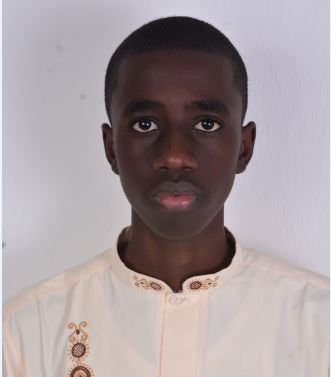

Muhammad Shehu

Summary
My name is Muhammad Shehu, a student of Modibbo Adama University, Yola. I am an Electrical and Electronics Engineering student with a passion for web development and programming. I have experience in HTML, CSS. I am currently seeking internship opportunities to gain practical experience in the field.
Education
- Bachelor of Engineering, Modibbo Adama Univeersity, Yola, 2022-2027
- First Ghana Experimental Secondary School, Yola, 2014-2020
- Chiroma Ahmed Academy primary School, Yola, 2012-2014
- Albayan Primary School, Bali, Taraba State, 2011-2012
- Time School, Kaduna State, 2009-2011
Work experience
- SWEP, Modibbo Adama University, Yola, Adamawa State 2025
- Office Assistant, Khaleef Cafe, Kano State, Feb-Nov 2021
Skills
- Technical skills:
- Proficiency in HTML, CSS
- Proficiency in Microsoft Office
- Fast typing
- Problem solving
- Ability to work with little or no supeervision
- Ability to work under pressure
- Ability to work in a team
- Ability to learn new skills quickly
- Ability to adapt to new environments
Awards and Certificates
- Certificate of Completion, Nestle E-learning 2025 (2025)
- Student Membership, Nigerian Society of Engineers (February, 2025)
- Student Membership, Nigerian Institution of Professional Engineers and Scientists (December, 2024)
- Certificate of Completion, Essentials of Web Development, Nigerian Institution of Professional Engineers and Scientists (December, 2024)
- Certificate of Participation, Blessing Ada Skills Empowerment program (November, 2024)
- West African Examination Counsil Certificate, 2020
- Certificate of Recognition, as Secretary General, Muslims Students Society of Nigeria (2020)
- Basic Examination Certificate, National Examination Council, 2016
- First School Leaving Certificate, Chiroma Ahmed Academy, 2014
Hobbies
Contact Me